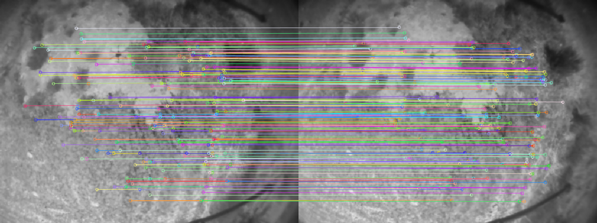

Root-anchored yaw correction for a magnetometer-free motion-capture suit
Danyal Khorami · 10 weeks
1
The system
15 wearable sensors on the body, one per segment
Each measures its own orientation
An iPhone at the hip tracks where the body is in the room
Everything streams to a browser that draws the skeleton
2
The problem
The suit produces a good pose and puts it in the wrong place.
The arms and legs are correct relative to each other.
The whole body faces the wrong direction — and that direction drifts.
3
Why yaw is the one that breaks
Roll, pitch and yaw axes. NASA Glenn Research Center — public domain,
via Wikimedia Commons
An accelerometer measures gravity, which always points downward.
Roll — tilting left or right changes how gravity appears to the sensor.
Pitch — tilting forward or backward also changes gravity's measured direction.
Yaw — turning horizontally about the vertical axis does not change the direction of gravity.
Therefore gravity corrects roll and pitch, but gives no information about yaw.
Without a magnetometer, a camera, or another external reference, yaw drifts.
4
What we measured
Observation
What it means
Global orientation error is about 3× worse than pose error measured relative to the body's own root
The skeleton is fine. The frame is wrong.
Error is near-uniform across every joint, including the root
A whole-body error, not a per-limb one
Session-to-session alignment changes sign
An arbitrary starting point, not slow drift
The pattern is solid. The exact numbers need re-measuring against a proper optical reference —
the old comparison suit was itself inertial and shares the same failure.
5
The finding that changed the plan
The phone already knows which way you face. We throw it away.
The hip sensor drives the skeleton's root orientation
The phone's orientation is used only if the hip sensor goes silent for a second
The phone supplies position only — no heading, no lever-arm correction
The one external heading reference in the system is unused as a heading reference.
Traced in js/custom_icm.js lines 582, 603–615, 931
6
How the phone recovers yaw

Real feature tracking between two camera frames — each line links the same physical
point seen twice. NASA/JPL-Caltech, Ingenuity Mars Helicopter — public domain, via
Wikimedia Commons
The camera picks out fixed points in the room and follows them frame to frame.
Turning the phone sweeps every one of those points across the image by the same angle.
The room does not rotate — so those points are an external reference, which is exactly what a body sensor lacks.
The gyroscope is fast but drifts. The camera is slower but stays locked to the room.
ARKit fuses both — that is visual–inertial odometry, and it is the only source of
yaw anywhere in this system.
7
What that buys us — and what it doesn't
It gives us
A heading that stays put — corrected against the room, so it doesn't creep
No compass, so no metal problem
Hardware we're already wearing
It doesn't give us
North. Zero is wherever you pressed start — fine for us, we only need it to stay still
Reliability. A blank wall, dim light, a covered camera, or a fast turn and it degrades or jumps
The other 14 sensors. It only sees the hip
So the phone must tell us when it is struggling — that is why tracking state has to be on
the wire, and why the model predicts its own confidence.
8
How the phone's yaw reaches the 15 sensors
The phone reports where the pelvis points in the room. Call it ψphone.
The suit reports where it thinks the pelvis points, in its own arbitrary frame: ψsuit.
The difference is the whole-body error: C₀ = ψphone − ψsuit
Apply that sameC₀ to all 15 sensors, as a rotation about the vertical axis.
Why one number fixes fifteen sensors: at the T-pose every sensor was calibrated against the
same suit frame. They therefore share the same wrong starting heading — so one rotation
removes the part of the error they have in common.
Rotating about the vertical axis only means roll and pitch — which gravity already got right —
are provably untouched.
9
What we do to make the phone input usable
The phone's data as it arrives today is not good enough to fuse. Five fixes, all in weeks 1–4.
Problem today
Fix
No timestamp on the phone message
Send the ARKit frame time; fit a clock map to host time — there are 16 independent clocks
No tracking state
Send it, so we know when the phone is struggling and can stop trusting it
The camera is not at the hip joint
Measure the lever arm; otherwise position is wrong every time the pelvis turns
A coordinate of exactly zero is dropped
Fix the guard — it is a truthiness test on a number
The phone can shift on the belt
Rigidly co-mount it with the hip sensor, or model the slip explicitly
None of this is machine learning. All of it has to be right before any model is trained,
or the model gets paid to hide a calibration error.
10
What the model then learns from the phone
What it is given
15 orientations, already anchored by the phone
The phone's pose, how fast it is changing, and its tracking state
The skeleton — which segment connects to which
Time between samples, and which samples are real
What it predicts
14 leftover heading corrections — the part C₀ could not reach
A confidence for each one
It never touches the root. The phone defines that.
The phone is not just Stage 1 — it is an input. When the phone is confident, the root is
trustworthy, so any remaining implausibility in the pose must belong to the limbs, and the
model can attribute it there. When the phone is struggling, that inference is unsafe — and the
model learns to back off instead of guessing.
11
What could fix it
Option
Verdict
Turn the magnetometer on
No — steel, cables, 15 radios. Confidently wrong heading.
A better single-sensor filter
Good hygiene, but cannot invent a heading reference
Joint-constraint methods
Real, magnetometer-free — this is the baseline to beat
Add a room camera / OptiTrack
Works, but that is infrastructure. Use it as ground truth.
Use the phone as a root anchor
PICKED — the hardware is already worn
Learn the leftover per-segment error
PICKED — this is the contribution
12
Why both, in that order
The phone can fix one segment. It cannot fix the other fourteen.
It tells you where the pelvis points.
It tells you nothing about whether the left forearm has drifted relative to it.
That leftover is recoverable only from body structure and motion. That is the learning problem.
13
The method
Stage 1 · Anchor the root (no ML)Use the phone's heading for the pelvis. Deterministic, cheap, and it must be measured first.
Stage 2 · Learn the leftover (the model)A small network predicts 14 heading corrections — one per non-root sensor. ~200k parameters.
Stage 3 · Know when to stopThe model also outputs its confidence. When the motion doesn't reveal the answer, it corrects less instead of guessing.
Week 3 is a go/no-go gate. If Stage 1 alone fixes most of it, the honest answer is
"this was a missing coordinate transform, not a missing model" — and that is a result worth publishing.
14
Stage 1 — anchor the root
Put the pelvis where the phone says it is, then carry that correction to every segment.
Needs a shared clock first — 16 devices, 16 independent clocks
Needs the camera-to-hip offset, or the position is wrong every time the pelvis turns
We test full rotation vs heading-only and let the data choose
15
Stage 2 — the model
Architecture
Graph encoder over the skeleton — a forearm only talks to its neighbours
Bidirectional GRU, ~2 s window — the project is offline, so future context is free
Output per sensor: a heading correction + a confidence
Why it is small
It only corrects a residual — the physics is handed to it for free
The correction is locked to the gravity axis, so it cannot break roll or pitch
~200k parameters: runs on a laptop, plausible on-device later
Trained on AMASS motion data with simulated sensors, so the true answer is known exactly.
Corruption (drift, dropouts, phone outages, mount slip) is modelled from real measured distributions.
16
On reinforcement learning
Not for the core task
Where we have ground truth, the right answer is known. That is supervised learning.
RL would throw that signal away and learn the same thing slower and less stably.
But the goal is right
1. Self-supervised adaptation — at deployment there are no labels, but there are free
consistency checks: feet shouldn't slide, joints have limits, gait is symmetric. Improve against those.
2. A small trust policy — "how much do I trust the phone right now?"
is a genuine sequential decision. Small, and a fair stretch goal.
17
How we will know it worked
Measured
Heading error per segment, in degrees
Joint position error after forward kinematics
Drift rate in degrees per minute
Worst-case, not just average
The rules we set in advance
The best baseline is frozen before the test set is opened
Training and test use different people
Absolute claims need optical ground truth — another inertial suit is not a reference
18
Ten weeks
Weeks
Work
1–2
Audit the phone path, freeze conventions, add timestamps and tracking state to the logs
3
Go / no-go gate — measure the deterministic phone anchor on its own
4–5
Simulated-sensor data generator, corruption model, evaluation harness
6
Classical and per-sensor baselines — frozen
7–8
Train the model; ablations; uncertainty analysis
9
Real captures against an optical reference
10
Statistics, failure analysis, write-up
The risky weeks are first, on purpose. If the phone doesn't send what we need,
I want to know in week 1 — not week 7.
19
The honest risk
Stage 1 might fix most of it without any machine learning.
That would be a real result, not a failure: it would show the defect was a missing
coordinate transform rather than something needing a neural network.
The gate is in week 3 so there is time to pivot — to packet-loss reconstruction
or tracking-quality prediction, on the same data.
20
What this contributes
A working method to anchor a magnetometer-free suit to a phone's visual tracking — the transform the system is missing today
A small, uncertainty-aware model that corrects only what becomes knowable once that anchor exists
A benchmark that separates the causes — start-up offset, drift, tracking resets, mount slip, timing error
Evidence about when a deterministic fix is enough and when learned body structure genuinely adds something
The project is useful whichever way the hypothesis falls.
21
Image credits
Slide
Source
4 — roll, pitch and yaw axes
NASA Glenn Research Center, Rollpitchyawplain.png. Public domain (NASA). commons.wikimedia.org/wiki/File:Rollpitchyawplain.png
7 — feature tracking between two camera frames
NASA/JPL-Caltech, Ingenuity Mars Helicopter navigation imagery,
Feature Detection and Tracking by Mars Helicopter.png. Public domain (NASA). commons.wikimedia.org/wiki/File:Feature_Detection_and_Tracking_by_Mars_Helicopter.png
Both images are works of the U.S. federal government and carry no copyright. The Mars Helicopter
image shows the same mechanism the iPhone uses — features tracked between two frames to recover
how far the camera turned.